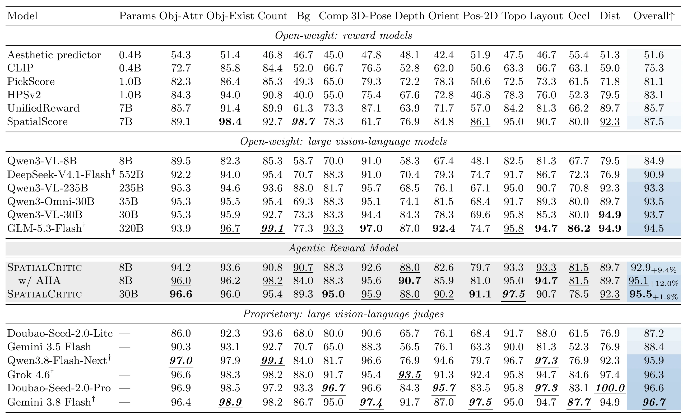
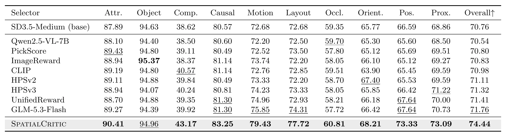
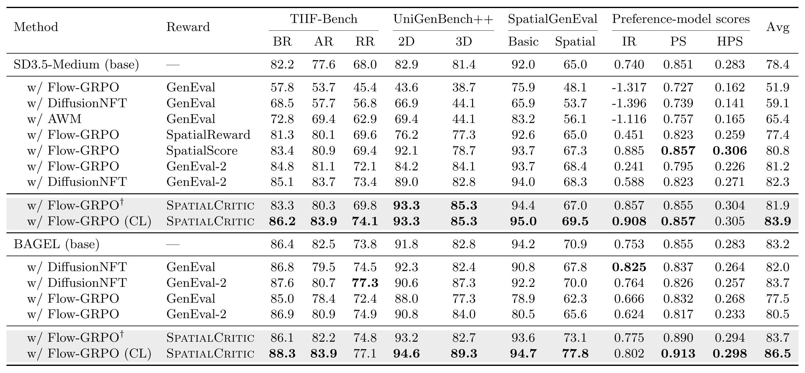

TL;DR: We propose a curriculum-guided RL paradigm for spatial T2I post-training, comprising SpatialCritic, an agentic reward model that leverages vision foundation models for robust supervision, and a progressive curriculum from basic spatial capabilities to complex compositions.
Reinforcement learning (RL) is promising for spatial text-to-image generation, but existing work largely focuses on policy optimization, assuming accurate rewards and effective online rollouts. We observe in-domain gains with out-of-domain degradation, exposing two limitations: unreliable spatial rewards in open-world settings and rollouts lacking basic-to-complex progression. We propose a curriculum-guided RL framework. First, we introduce SpatialCritic, an agentic reward model equipped with a spatial perception harness that combines reusable verification guidance with specialized vision tools. We then construct spatial preference datasets through targeted counterfactual perturbations and perform agent–harness alignment to improve tool selection and evidence integration efficiently. Second, curriculum learning organizes shared foundational capabilities and their compositional dependencies in a capability graph for mastery-guided rollouts, periodic review, and targeted remediation. On SpaRW-Eval, SpatialCritic achieves 95.1% verification accuracy, outperforming 320B GLM-5.3-Flash with a 40× smaller 8B backbone and raising average baseline scores from 78.4 to 83.9 on SD3.5-Medium and 83.2 to 86.5 on BAGEL.
RL effectiveness depends on rollout organization, reward accuracy, and policy optimization. Existing work primarily advances policy optimization, often assuming that rewards provide reliable supervision and rollouts support effective learning. In spatial generation, these assumptions can fail: in-domain performance improves while out-of-domain performance deteriorates.
Generalization collapse. ID accuracy improves while OOD performance falls.
Q1. Are reward models accurate and robust enough in open-world spatial scenarios?
Q2. Can rollout organization support progressive learning from basic capabilities to complex spatial compositions?
SpatialCritic. An agentic reward model that uses vision foundation models for grounded spatial verification, with a spatial perception harness, counterfactual preference data, and agent–harness alignment via RLVR.
Curriculum. Rollouts progress from basic spatial capabilities to complex compositions through a Compositional Capability Graph, with mastery-guided progression, review, and remediation.
Results. SpatialCritic reaches 95.1% on SpaRW-Eval. Curriculum RL raises average scores to 83.9 on SD3.5-Medium and 86.5 on BAGEL.
Reward-modeling paradigms. SpatialCritic combines VLM reasoning with specialized vision tools for grounded verification.
SpatialCritic decomposes a prompt into atomic spatial claims, identifies uncertain claims, plans targeted tool calls, and integrates structured visual evidence into a final preference judgment. The spatial perception harness provides reusable verification guidance and tools for grounding, counting, segmentation, depth, geometry, orientation, and contextual checks.
Spatial verification. (a) Fixed mask–depth routine; (b) agent-planned tool use.
We optimize the agent through RL with verifiable outcome rewards and a token-budget penalty while keeping the perception harness fixed. Alignment improves tool selection, evidence integration, judgment accuracy, and response efficiency.
We construct counterfactual prompt pairs that alter a targeted spatial constraint while preserving the remaining visual content. Text-level validation, image-level verification, and sampled human inspection retain pairs whose images exhibit the intended contrast.
Spatial preference dataset construction. Prompt construction, image verification, human review, and hard-set selection.
Higher-order spatial tasks combine shared foundational capabilities. A compositional capability graph captures these dependencies, while mastery-guided progression, periodic review, and targeted remediation organize policy rollouts.
CCG-guided progressive learning. Solid arrows show capability dependencies.



Decision and efficiency. The aligned agent corrects the verdict while using fewer tokens and lower latency.
Agent–harness alignment cases. Alignment improves evidence-consistent counting and identifies the decisive single-row layout constraint.
Planning improvements. The aligned agent skips an irrelevant tool and proactively verifies a missing object.
Accuracy and efficiency during agent optimization. Validation accuracy increases while response length and training-step time decrease.
The manuscript contains the complete method, experimental setup, additional cases, ablations, and implementation details.